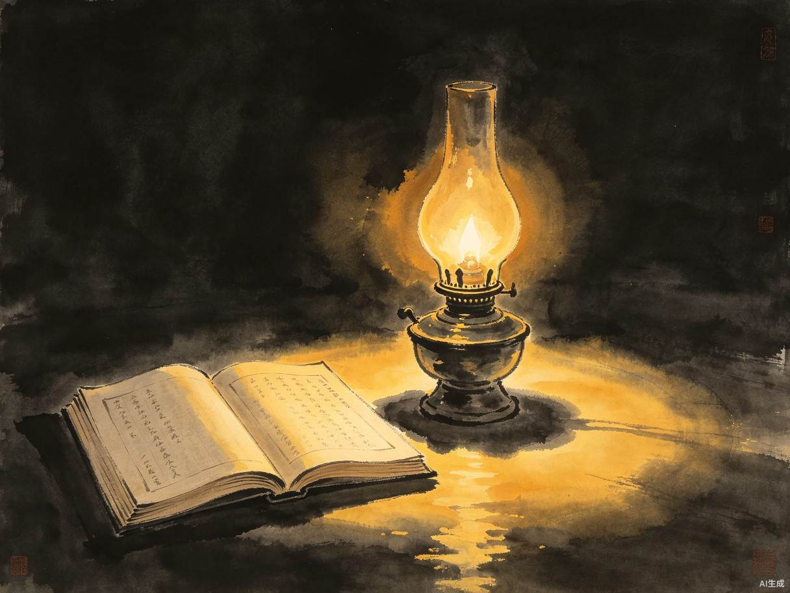
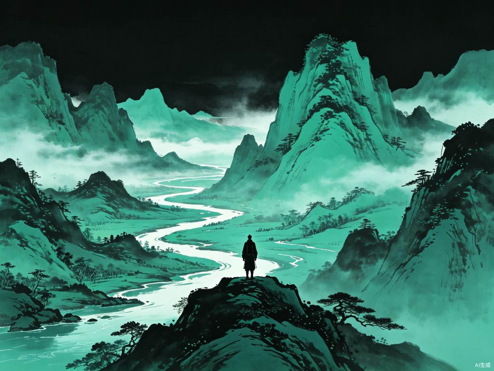
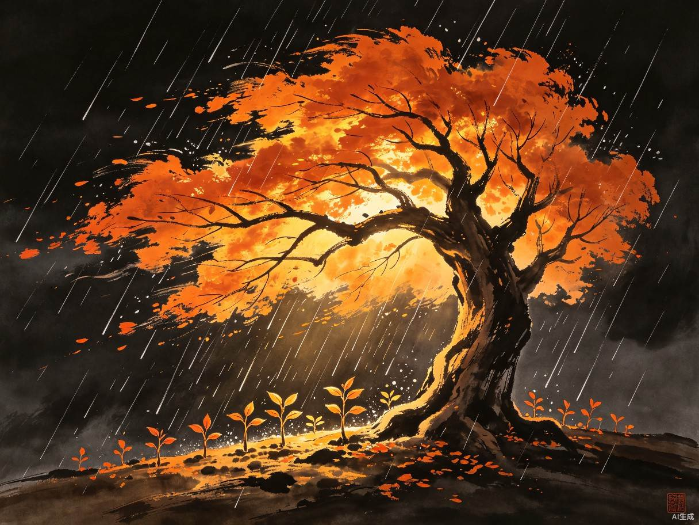
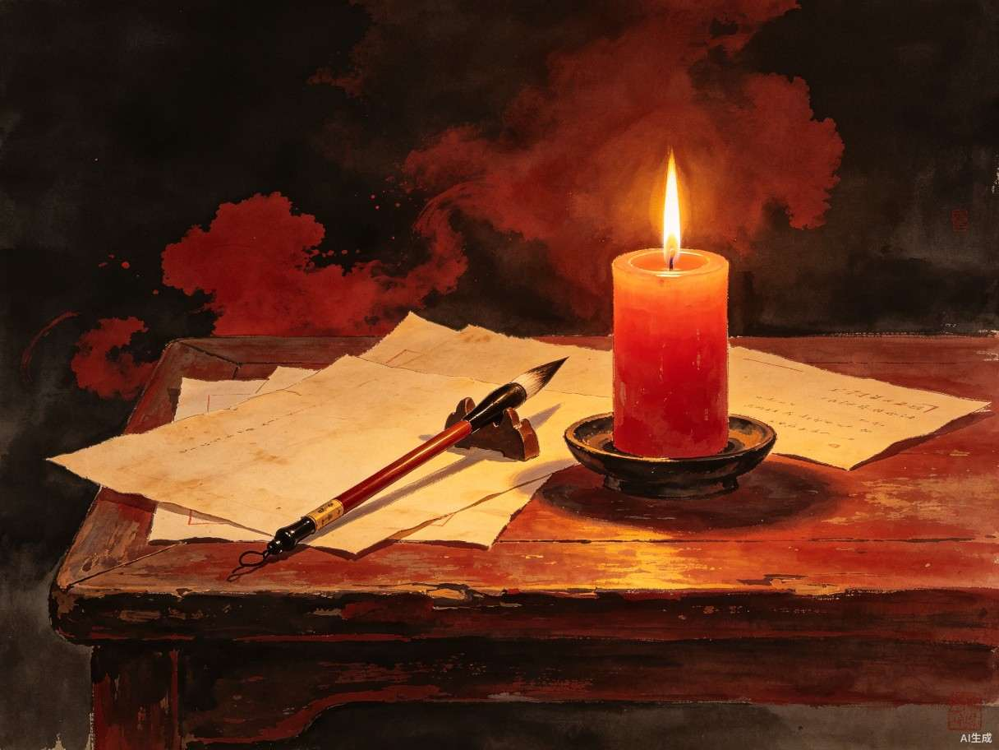
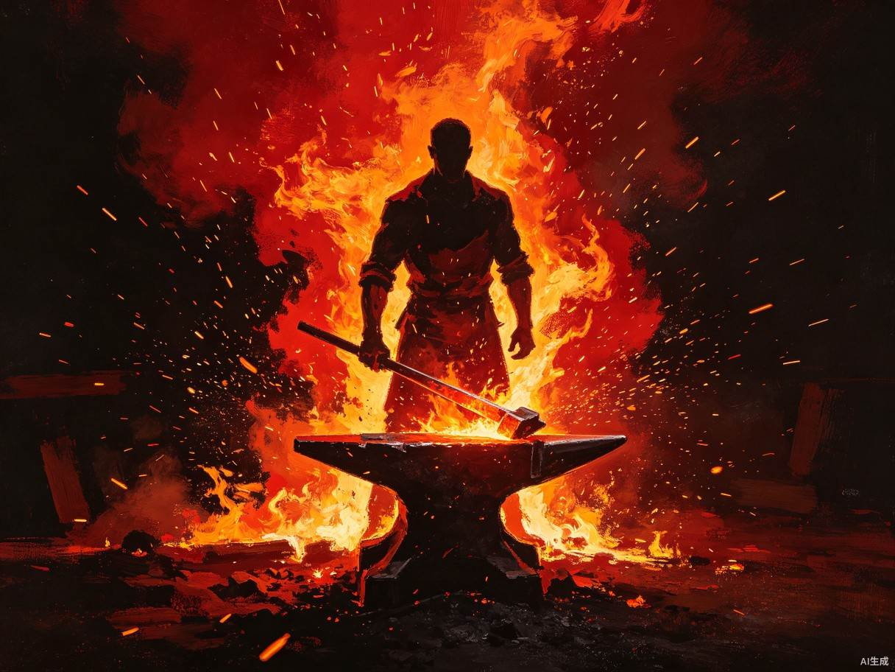
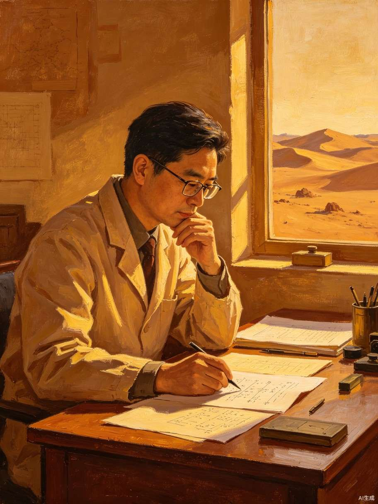
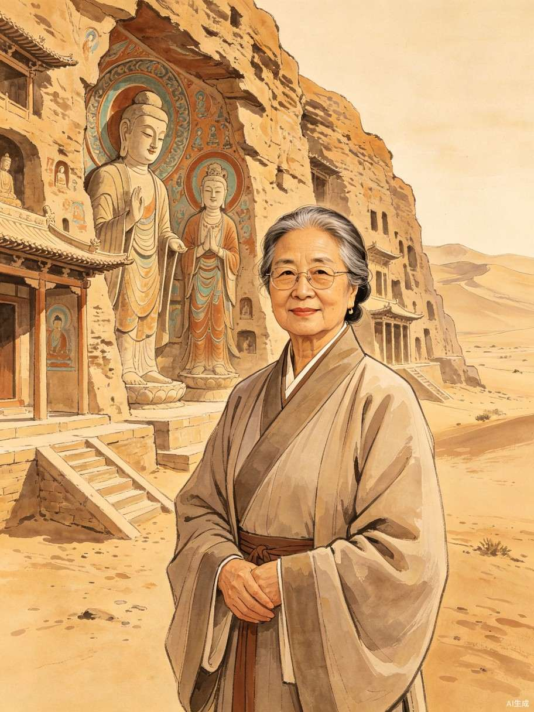

一个由 AI 辅助生成的沉浸式互动体验产品。选择一位打动人心的人物，走进他的人生故事，在结尾获得以他口吻撰写的启发性回应——帮你找到面对迷茫、挫折和困境的力量。
青少年学生以及处于"奥德赛时期"（20-30岁人生探索期）、感到迷茫或需要精神力量的年轻人。当你觉得"不知道怎么办"的时候，也许别人的人生能给你答案。
当前版本的人物故事和回应均由 AI 辅助创作。未来完整版将接入 AI 大模型，用户可输入自己的困惑，AI 以所选人物的口吻生成个性化的启发性回应。






